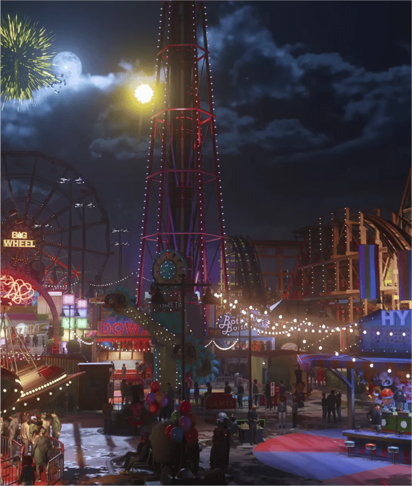

MARVEL'S SPIDER-MAN 2 DESTAQUES

Uma evolução da história do Spider-Man
O incrível poder do simbionte obriga Peter e Miles a encarar um desafio sem igual que vai muito além de seus alter egos mascarados, já que precisam encontrar o equilíbrio entre suas vidas pessoais, amizades e o dever de proteger quem precisa.

Viva a experiência de poder jogar com dois Spiders
Alterne rapidamente entre os dois Spiders enquanto explora uma versão expandida da Nova York da Marvel.

Enfrente supervilões icônicos da Marvel
Lute contra vários vilões novos e clássicos, incluindo uma versão original do monstruoso Venom, o implacável Kraven the Hunter, o imprevisível Lizard e muitos outros!
Visite uma versão expandida da Nova York da Marvel
Explore uma Nova York da Marvel maior do que nunca, apresentando dois novos bairros — Brooklyn e Queens —, além de lugares como Coney Island e muitos outros.
.webp)
VISÃO GERAL DO JOGO
Jornada Além das Teias:
A União de Dois Spider-Men.
Em uma narrativa envolvente no universo Marvel, os jogadores são levados a uma emocionante jornada através das perspectivas únicas de dois Spider-Men - o veterano Peter Parker e o aspirante a herói Miles Morales.
Em "A União de Dois Spider-Men", Miles Morales enfrenta desafios ao se adaptar a um novo lar e seguir os passos de seu mentor, Peter Parker. Uma violenta disputa ameaça destruir Nova York, levando Miles a descobrir a importância da colaboração com Peter. A dupla dinâmica, unindo habilidades distintas, enfrenta desafios que ultrapassam suas capacidades individuais. A trama destaca a evolução de Miles como o novo Spider-Man, enquanto Peter assume o papel de mentor, compartilhando a responsabilidade de proteger a cidade. Enfrentando adversários formidáveis, a narrativa ressalta a força na união dos dois heróis. A história não só promete ação eletrizante.
Mas também explora os laços entre os personagens, oferecendo aos jogadores uma experiência única no universo aracnídeo da Marvel, repleta de momentos épicos, desafios emocionantes e a mensagem atemporal de responsabilidade.